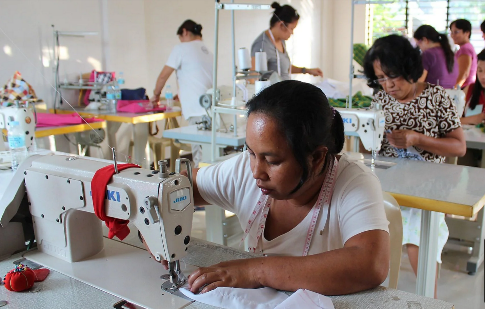

At Hopeful Stitches, we believe in the transformative power of creativity, community, and compassion. Our journey began with a simple idea: to uplift and empower women from all walks of life while making a positive impact on our environment.
Based in the heart of Candelaria, Quezon, our brand is more than just about fashion and accessories. We are a beacon of hope, a testament to the resilience and strength of women, and a catalyst for change in our community.
Our artisans are the heart and soul of Hopeful Stitches. They are single mothers, out-of-school youths, and senior citizens—each with their unique stories, struggles, and dreams. Despite facing hardships, they possess an extraordinary talent: the ability to breathe new life into old materials through the art of upcycling.
With nimble fingers and boundless creativity, these women transform discarded clothes and recyclable materials into stunning bags, purses, wallets, and accessories. Every stitch they make is a testament to their unwavering determination, their unwavering spirit, and their unwavering hope for a brighter future.
But our mission extends beyond providing livelihood opportunities. At Hopeful Stitches, we are committed to environmental stewardship. By upcycling and recycling materials around us—old clothes, bags, and more—we not only create beautiful, one-of-a-kind pieces but also contribute to the preservation of our planet.
Every purchase you make from Hopeful Stitches is more than just a fashion statement; it's a vote for sustainability, empowerment, and social change. It's a symbol of solidarity with women who are rewriting their own narratives and shaping a better world for themselves and their families.
Thank you for being a part of our journey. Together, let's stitch hope, transform lives, and create a future filled with endless possibilities.
With love and gratitude,
Founder, Hopeful Stitches
Mission
At Hopeful Stitches, our mission is to empower and uplift women from diverse backgrounds by providing them with sustainable livelihood opportunities through the art of upcycling. We are committed to fostering a supportive community where every woman's God-given talents are celebrated and nurtured, enabling them to thrive both economically and creatively. Through our dedication to environmental stewardship and social responsibility, we strive to make a positive impact on our community while promoting a culture of sustainability and empowerment.
Vision
Our vision at Hopeful Stitches is to create a world where every woman has the opportunity to realize her full potential, regardless of her circumstances. We envision a future where upcycling and sustainable living are embraced as powerful tools for positive change, both for individuals and the planet. By continuing to innovate, inspire, and uplift, we aspire to be a global leader in ethical fashion and social enterprise, inspiring others to join us in creating a more equitable, inclusive, and sustainable world for generations to come.
Welcome to the heart and soul of Hopeful Stitches—the Gallery.
Here, we invite you to explore the exquisite creations handcrafted by the talented women who breathe life into our brand. Each piece tells a story of resilience, creativity, and hope, reflecting the diverse journeys and unique talents of our artisans. From upcycled bags to intricately stitched accessories, every item in our gallery is a testament to the transformative power of artistry and empowerment. Join us on this inspiring journey as we celebrate the beauty of sustainability, craftsmanship, and community. Step inside our gallery and be inspired by the remarkable creations of the women behind Hopeful Stitches.